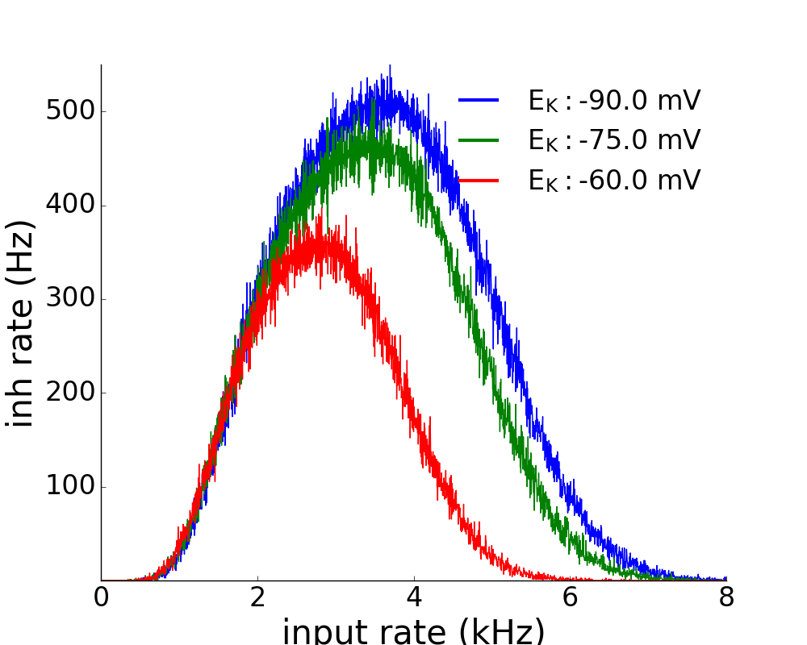
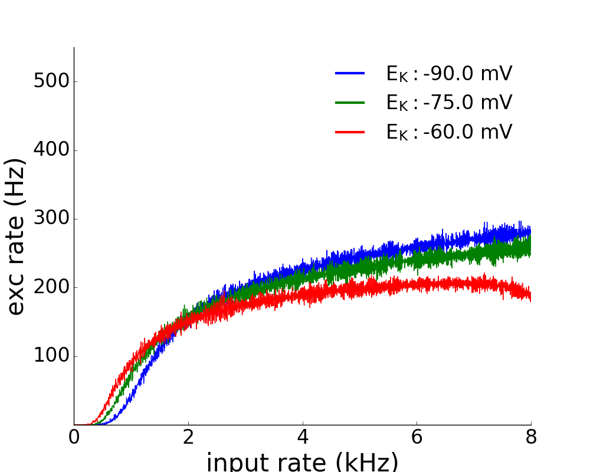

This is the readme for the Brian code associated with the paper:
Kim CM, Nykamp DQ (2017) The influence of depolarization block on seizure-like activity in networks of excitatory and inhibitory neurons. J Comput Neurosci 43:65-79
http://dx.doi.org/10.1007/s10827-017-0647-7
This code was contributed by Dr CM Kim.
The code requires the Brian (python package) simulator which is freely available from
http://briansimulator.org
Once Brian is installed, the simulations can be started with commands like:
python fig2-fi.py
After a minute or so you should see a couple of figures:

